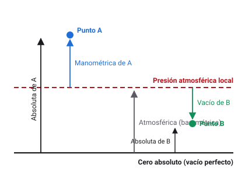
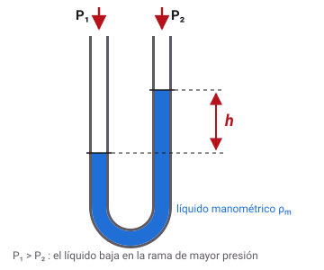
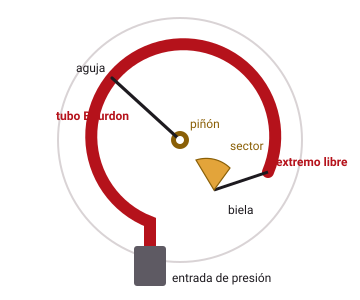
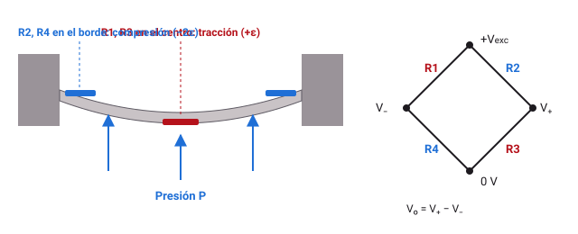

Universidad del Valle · Sede Cartago · Tecnología en Electrónica
Medición de presión en procesos industriales
Cuaderno interactivo de prácticas experimentales para Instrumentación Industrial. Recorre los tipos de presión y sus unidades, el principio hidrostático y los transductores que convierten la presión en una señal eléctrica, hasta el lazo de 4–20 mA.
Tipos y unidades
Principio hidrostático
Transductores
Ruta del cuaderno
Guía de laboratorio
Medición y transducción de presión
La práctica tiene dos partes: una exploración guiada con simuladores y un laboratorio virtual en el que cada estudiante recibe un banco con instrumentos que tienen sus propios errores, como ocurre con los equipos reales.
Objetivo general
Medir la presión como variable de proceso, relacionar sus tipos y unidades, verificar experimentalmente el principio hidrostático y caracterizar los transductores que la convierten en una señal eléctrica normalizada.
Objetivos específicos
- Distinguir presión absoluta, manométrica, diferencial y de vacío, y convertir entre las unidades de uso industrial.
- Calibrar un manómetro Bourdon contra una balanza de pesos muertos y determinar su error, su histéresis y su clase de exactitud.
- Verificar la relación \(P = \rho g h\) y determinar la densidad de un líquido desconocido a partir de mediciones de presión y nivel.
- Caracterizar un sensor piezorresistivo integrado leído con un ADC, compararlo con su hoja de datos y escalarlo a un lazo de 4–20 mA.
- Redactar un informe técnico con los resultados y entregarlo en PDF.
Equipos de referencia
El laboratorio virtual reproduce este montaje. Si la sede cuenta con los equipos, la misma guía sirve para la práctica presencial.
| Equipo | Especificación sugerida | Uso |
|---|---|---|
| Balanza de pesos muertos | Pistón de 1,0000 cm², juego de masas de 0,5 kg, aceite como medio | Práctica 1 |
| Manómetro Bourdon | Carátula de 100 mm, 0–10 bar, clase 1,0 (EN 837-1) | Práctica 1 |
| Columna de líquido | Tubo de acrílico de 1,2 m con regla milimetrada y toma en el fondo | Práctica 2 |
| Manómetro digital | 0–20 kPa, resolución 0,01 kPa | Práctica 2 |
| Manómetro en U | Mercurio o líquido manométrico, escala en mm | Práctica 2 |
| Barómetro digital | Resolución 0,01 kPa | Prácticas 2 y 3 |
| Calibrador de presión | Bomba manual con patrón digital, 0–700 kPa | Práctica 3 |
| Sensor piezorresistivo | MPX5700AP (absoluto, 15–700 kPa, salida 0,2–4,7 V) | Práctica 3 |
| Microcontrolador | Arduino UNO, ADC de 10 bits con referencia en Vcc | Práctica 3 |
Metodología
- Antes de la sesión. Lee las secciones I a V y explora los simuladores. Responde las preguntas orientadoras de cada práctica.
- Durante la sesión. Identifícate en el laboratorio virtual con tu código estudiantil. Ese código define tu banco, así que tus datos serán distintos a los de tus compañeros.
- Registro. Toma las lecturas que pide cada práctica, ejecuta el análisis y escribe tu interpretación en los campos de cada página.
- Después de la sesión. Resuelve los ejercicios y descarga el informe en PDF desde la sección VIII.
En la práctica presencial, nunca desconectes una manguera ni un manómetro con el sistema presurizado: alivia primero la presión con la válvula de venteo. No superes el rango del instrumento y usa gafas de seguridad. El mercurio es tóxico; si un manómetro en U se rompe, informa al docente y no lo limpies con la mano.
Sección I · Fundamentos
La presión como variable de proceso
La presión es la fuerza que un fluido ejerce por unidad de área, \(P = F/A\). Se mide en casi todos los procesos: calderas, redes de aire comprimido, bombas, filtros, reactores y, de forma indirecta, para conocer el nivel y el caudal.
Sensor, transductor y transmisor
Elemento primario
Recibe la presión y se deforma: tubo Bourdon, fuelle o diafragma. En la norma ISA-5.1 el elemento primario de presión se identifica como PE.
Transductor
Convierte la deformación en una magnitud eléctrica: galgas extensiométricas, piezorresistencias de silicio, condensadores o cristales piezoeléctricos.
Transmisor
Acondiciona la señal y la envía como 4–20 mA. Se identifica como PT; si además tiene indicación local, PIT.
Recorrido de la señal
Mueve la presión de la línea de vapor y observa la señal en cada etapa. El transductor es un diafragma con galgas de 2 mV/V a plena escala, excitado con 10 V; el amplificador tiene ganancia 250 y el transmisor está calibrado de 0 a 1000 kPa. Toca cada bloque para ver su función.
Dibuja el diagrama P&ID de este lazo con la simbología ISA-5.1 e indica qué tipo de señal viaja por cada línea: presión del proceso, milivoltios, voltios, corriente de 4–20 mA.
Sección I · Fundamentos
Características estáticas y selección del rango
Un manómetro bien elegido trabaja en la zona central de su escala. Si el rango es demasiado grande, el error en kilopascales crece; si es demasiado pequeño, el elemento elástico se fatiga y pierde la calibración.
| Término | Definición | Ejemplo en presión |
|---|---|---|
| Rango | Valores entre el límite inferior (LRV) y el superior (URV). | 0 a 10 bar |
| Alcance (span) | Diferencia URV − LRV. | 1000 kPa |
| Sensibilidad | Cambio de la salida por unidad de presión. | 2 mV/V a plena escala |
| Exactitud (clase) | Error máximo permitido, en % del alcance. | Clase 1,0 → ±10 kPa en 0–10 bar |
| Histéresis | Diferencia entre la lectura subiendo y bajando en el mismo punto. | 4 kPa a mitad de escala |
| Repetibilidad | Dispersión de lecturas repetidas en las mismas condiciones. | 0,1 % del alcance |
| Sobrepresión | Presión máxima que soporta sin daño permanente. | 1,3 veces el URV |
| Estabilidad | Deriva de la calibración con el tiempo. | 0,1 % del URV por año |
Clases de exactitud de manómetros (EN 837-1)
| Clase | 0,1 | 0,25 | 0,6 | 1,0 | 1,6 | 2,5 | 4,0 |
|---|---|---|---|---|---|---|---|
| Error admisible en 0–10 bar | ±1 kPa | ±2,5 kPa | ±6 kPa | ±10 kPa | ±16 kPa | ±25 kPa | ±40 kPa |
| Uso típico | Patrones y laboratorio | Industria, procesos | Servicios generales | ||||
Selección del rango
La norma EN 837-2 recomienda que la presión de trabajo no supere el 75 % del valor final de la escala con carga estable, ni el 66 % con carga pulsante, como la descarga de una bomba de pistones. Elige una presión de trabajo y un rango estándar para evaluar la selección.
Sección II · Tipos de presión y unidades
Una misma presión, cuatro referencias
El valor de una presión depende del cero contra el que se compara. Confundir la referencia es uno de los errores más comunes al leer una hoja de datos o al configurar un transmisor.

Absoluta
Se mide desde el vacío perfecto. Nunca es negativa. Se usa en barómetros, en el cálculo de gases (\(PV = nRT\)) y en sensores marcados con A o AP.
Manométrica (relativa)
Se mide desde la presión atmosférica del lugar. Es la que indican casi todos los manómetros de planta y se marca con G o GP.
De vacío
Manométrica negativa: cuánto falta para llegar a la atmósfera. Un vacuómetro que indica −60 kPa en Cartago corresponde a unos 30,8 kPa absolutos.
Diferencial
Diferencia entre dos presiones del proceso, \(\Delta P = P_1 - P_2\). Se usa para medir caudal con placas de orificio, nivel en tanques y la caída de presión en filtros. Se marca D o DP.
La presión atmosférica depende de la altitud
La atmósfera estándar internacional (ISA) da la presión media en función de la altitud \(h\) sobre el nivel del mar:
Unidades de uso industrial
| Unidad | Símbolo | Equivale a | Dónde aparece |
|---|---|---|---|
| pascal | Pa | 1 N/m² | Sistema Internacional |
| kilopascal | kPa | 1000 Pa | Transmisores, hojas de datos |
| bar | bar | 100 kPa | Manómetros europeos, neumática |
| libra por pulgada cuadrada | psi | 6,894757 kPa | Equipos estadounidenses, llantas |
| atmósfera estándar | atm | 101,325 kPa | Química, termodinámica |
| kilogramo-fuerza por cm² | kgf/cm² | 98,0665 kPa | Calderas e hidráulica antiguas |
| milímetro de mercurio | mmHg | 133,322 Pa | Vacío, medicina |
| pulgada de columna de agua | inH₂O | 249,089 Pa | Ventilación, tiro de calderas, nivel |
El sufijo importa. «psig» es manométrica y «psia» es absoluta. Un transmisor de 0–100 psia puesto en una línea que indica 0–100 psig tendrá un error de casi 13 psi en Cartago.
Sección II · Simulador
Conversor de unidades y referencias
Escribe una lectura, elige su unidad y su referencia, y ubica el instrumento en una ciudad. El simulador calcula las presiones absoluta, manométrica y de vacío, y la lectura en todas las unidades.
La lectura en todas las unidades
| Unidad | Nombre | Absoluta | Manométrica |
|---|
Presión atmosférica según la altitud
Curva de la atmósfera estándar con las ciudades de la región. Selecciona la flecha de la barra y toca la curva para leer valores.
Sección III · Principio hidrostático
La presión de una columna de líquido
En un fluido en reposo, la presión aumenta con la profundidad porque cada capa soporta el peso del líquido que tiene encima. Solo importa la altura vertical, no la forma del recipiente ni el volumen.
Consecuencias prácticas
Paradoja hidrostática
Tres recipientes de formas distintas llenos hasta la misma altura tienen la misma presión en el fondo, aunque contengan volúmenes muy diferentes.
Medición de nivel
Si se conoce la densidad, un transmisor de presión en el fondo del tanque mide el nivel: \(h = P/(\rho g)\). Es el método más usado en tanques abiertos.
Columnas como patrón
Una columna de líquido de densidad conocida es un patrón primario de presión. De ahí vienen unidades como mmHg e inH₂O.
Manómetro en U

Al aplicar presiones distintas en las dos ramas, el líquido manométrico se desplaza hasta que el peso de la columna de desnivel equilibra la diferencia de presión. Igualando presiones en el nivel inferior del líquido:
El manómetro inclinado amplía la escala para presiones pequeñas: la columna recorre una longitud \(L\) sobre un tubo inclinado un ángulo \(\theta\), y \(h = L\sin\theta\). Con \(\theta = 10^\circ\) la lectura se amplía 5,8 veces.
Densidades de referencia a 20 °C
| Líquido | ρ (kg/m³) | kPa por metro (g = 9,7778) | Uso |
|---|
Sección III · Simulador
Tanque y manómetro en U
Elige el líquido, la altura y el punto de medición. El tanque puede estar abierto o presurizado con un colchón de gas.
Manómetro en U e inclinado
Sección IV · Transductores de presión
De la deformación a la señal eléctrica
Casi todos los transductores de presión tienen dos etapas: un elemento elástico que se deforma con la presión y un sensor que convierte esa deformación en una magnitud eléctrica.
Elementos elásticos primarios

Tubo Bourdon
Tubo de sección ovalada curvado en C, en espiral o en hélice. La presión interna tiende a volverlo circular y lo endereza. Cubre desde 0,6 bar hasta 1600 bar y es el manómetro de carátula de toda planta.
Fuelle
Cilindro corrugado que se alarga con la presión. Es sensible a presiones bajas (de unos pocos kPa) y se usa en registradores y controladores neumáticos.
Diafragma
Lámina circular empotrada en su borde. Su deflexión es pequeña y se mide con galgas, piezorresistencias o capacitancia. Es la base de los transmisores electrónicos.
Galgas extensiométricas sobre un diafragma
Una galga cambia su resistencia con la deformación unitaria \(\varepsilon\) según su factor de galga \(GF \approx 2\). En un diafragma circular empotrado de radio \(a\) y espesor \(t\), el centro se estira y el borde se comprime con el doble de deformación:

Otros principios de transducción
| Principio | Cómo funciona | Ventajas | Limitaciones |
|---|---|---|---|
| Piezorresistivo de silicio | Resistencias difundidas en un diafragma de silicio; el efecto piezorresistivo es 50 a 100 veces mayor que en una galga metálica. | Alta sensibilidad, bajo costo, integra acondicionamiento (MPX5700, MPX5010). | Deriva con la temperatura; requiere compensación. |
| Capacitivo | El diafragma es una placa de un condensador: \(C = \varepsilon A/(d - \delta)\). En versión diferencial se mide \((C_1 - C_2)/(C_1 + C_2)\). | Muy estable y exacto; es el principio de muchos transmisores de presión diferencial. | Electrónica más compleja; sensible a capacitancias parásitas. |
| Piezoeléctrico | Un cristal de cuarzo genera carga \(Q = d_{33} F\) al comprimirse. | Respuesta de hasta cientos de kHz; ideal para explosiones y combustión. | Solo mide presiones dinámicas; la carga se fuga en régimen estático. |
| Resonante | La presión cambia la frecuencia de vibración de un elemento de silicio. | Salida en frecuencia, exactitud de 0,01 %. | Costo alto. |
Sección IV · Simulador
Diseño de un diafragma con galgas
Ajusta el radio, el espesor y el material del diafragma. El simulador calcula la deformación de las galgas, la deflexión, el esfuerzo y la salida del puente, y te avisa cuándo el diseño deja de ser lineal o se acerca a la fluencia del material.
Salida del puente frente a la presión
La recta es la respuesta lineal de la teoría de placas delgadas. Las líneas verticales marcan dónde la deflexión llega a la cuarta parte del espesor y dónde el esfuerzo alcanza dos tercios de la fluencia, el límite de diseño usual.
Sección IV · Simulador
Sensor piezorresistivo integrado con ADC
Los sensores MPX de NXP integran el diafragma de silicio, la compensación de temperatura y el amplificador. Su salida es proporcional a la alimentación, así que el ADC debe usar la misma tensión como referencia.
El firmware convierte la cuenta suponiendo Vs = 5,00 V, como en la hoja de datos.
Cambia la alimentación a 4,80 V con la referencia fija y luego con la referencia igual a Vs. ¿Por qué la medición ratiométrica elimina el error de la fuente?
Sección V · Transmisión de la señal
Transmisor de presión diferencial para nivel
Un transmisor de presión diferencial en el fondo de un tanque mide el nivel. Si el transmisor queda por debajo de la toma, la columna del tubo de conexión suma una presión que hay que restar: es la supresión de cero. Si el lado de baja está lleno de líquido, como en tanques cerrados con pierna húmeda, aparece una elevación de cero.
Las corrientes menores o iguales a 3,6 mA y mayores o iguales a 21 mA indican falla del transmisor o del lazo. Un controlador bien configurado distingue así un tanque vacío (4 mA) de un cable roto.
Sección V · Criterios de selección
¿Qué instrumento elegir?
La selección depende del rango, del tipo de presión, de la exactitud, de la velocidad de respuesta, del fluido y de si se necesita una señal eléctrica para el sistema de control.
| Criterio | Bourdon | Diafragma con galgas | Piezorresistivo de silicio | Capacitivo | Piezoeléctrico |
|---|---|---|---|---|---|
| Rango típico | 0,6 a 1600 bar | 1 a 7000 bar | 1 kPa a 70 MPa | 0,1 kPa a 40 MPa | Hasta 1000 MPa (dinámica) |
| Exactitud típica | 0,6 a 2,5 % FS | 0,1 a 0,5 % FS | 0,25 a 2,5 % FS | 0,04 a 0,1 % FS | 1 % FS |
| Respuesta | Lenta | Rápida | Rápida | Media | Muy rápida (kHz) |
| Salida | Aguja | mV/V | V o mA integrados | mA, HART | Carga (pC) |
| Presión estática | Sí | Sí | Sí | Sí | No |
| Energía externa | No necesita | Excitación | Alimentación | Alimentación | Amplificador de carga |
| Costo relativo | Muy bajo | Medio | Bajo | Alto | Alto |
Casos de selección
Elige el instrumento que recomendarías y compara tu criterio con la justificación.
Sección VI · Laboratorio virtual
Ingreso al laboratorio
Tu código estudiantil asigna un banco de medición. Cada banco tiene un manómetro con sus propios errores, un líquido desconocido distinto y un sensor piezorresistivo con desviaciones respecto a la hoja de datos. Por eso tus resultados serán únicos.
Tu banco
Si cambias el código después de tomar datos, el banco cambia y debes repetir las lecturas. Los datos se guardan en este navegador; si cambias de equipo, empieza de nuevo.
Cómo funciona el laboratorio
- Fija la condición de la prueba con el control deslizante: masa sobre el pistón, nivel de la columna o presión del calibrador. Los indicadores tardan un momento en estabilizarse.
- Pulsa Registrar lectura para guardar en la tabla lo que muestran los instrumentos en ese instante.
- Toma las lecturas mínimas que pide cada práctica, repartidas en todo el rango.
- Pulsa Analizar datos. Se ajustan los modelos por mínimos cuadrados y se dibujan los resultados.
- Escribe tu análisis en el campo de cada práctica. Todo se recopila en el informe.
Práctica 1 · Tipos de presión y unidades
Calibración de un manómetro Bourdon
La balanza de pesos muertos genera una presión patrón al colocar masas conocidas sobre un pistón de área conocida. El manómetro de tu banco, de 0 a 10 bar y clase 1,0, está conectado a la misma cámara de aceite.
Procedimiento
- Sube la masa de 0 a 10 kg por pasos (por ejemplo 0, 2, 4, 6, 8 y 10 kg) y registra cada lectura. Es la carga ascendente.
- Baja la masa por los mismos puntos hasta 0 kg y registra de nuevo. Es la carga descendente.
- Necesitas al menos 10 lecturas con puntos en ambos sentidos. Analiza los datos.
Carga ascendente ↑
| # | Masa (kg) | P patrón (kPa) | Lectura (kPa) | Sentido |
|---|
Preguntas orientadoras
- Expresa la presión patrón máxima en kPa, bar, psi y kgf/cm². ¿Por qué la balanza no da exactamente 10 kgf/cm² con 10 kg?
- ¿Cuál es el error máximo de tu manómetro en kPa y en % del alcance? ¿Cumple la clase 1,0?
- ¿En qué zona de la escala es mayor la histéresis? Explica su origen físico en el tubo Bourdon y en el mecanismo.
- Con la recta de ajuste, separa el error de cero y el error de alcance. ¿Cuál corregirías primero y cómo se hace en un manómetro real?
Práctica 2 · Principio hidrostático
Densidad de un líquido desconocido
Una columna de acrílico contiene un líquido desconocido. En el fondo hay una toma conectada a un manómetro digital y a un manómetro en U de mercurio. Al variar el nivel, la presión en el fondo cambia según \(P = \rho g h\), y la pendiente de esa recta revela la densidad.
Procedimiento
- Llena la columna por etapas entre 0 y 1,20 m y registra al menos 8 lecturas: nivel en la regla, presión del manómetro digital y desnivel del manómetro en U.
- Anota la presión del barómetro: la necesitarás para calcular la presión absoluta en el fondo.
- Analiza los datos: se ajusta la recta \(P = m\,h + b\) y se calcula \(\rho = m/g\) con la gravedad local.
| # | h (m) | P man (kPa) | Δh Hg (mm) | P atm (kPa) |
|---|
Preguntas orientadoras
- ¿Qué densidad obtuviste? Compárala con la tabla de la sección III e identifica el líquido.
- ¿Qué significa físicamente el intercepto de la recta? ¿Debería ser cero?
- Calcula la presión con el desnivel del manómetro en U y compárala con la del manómetro digital. ¿Cuál instrumento tiene mejor resolución en este rango?
- ¿Cuál es la presión absoluta en el fondo con la columna llena? ¿Cuánto cambiaría si la práctica se hiciera en Bogotá?
Práctica 3 · Transductores de presión
Caracterización de un MPX5700AP
El sensor está conectado a un calibrador con bomba manual y patrón digital. Mide presión absoluta, así que con la bomba en cero indica la presión atmosférica del laboratorio. Un Arduino UNO lee su salida con el ADC de 10 bits, cuya referencia es la misma alimentación \(V_s\).
Procedimiento
- Con la bomba, sube la presión manométrica de 0 a 600 kPa y registra al menos 7 lecturas repartidas en el rango.
- Analiza: se ajusta la recta \(V_{out} = a + b\,P_{\text{abs}}\) y se compara con la de la hoja de datos evaluada con tu \(V_s\) medida.
- Con los coeficientes ajustados, escribe la ecuación que usaría el firmware para pasar de la cuenta del ADC a kPa.
| # | P man (kPa) | P abs (kPa) | Vout (V) | N ADC | Vs (V) |
|---|
Preguntas orientadoras
- ¿Qué sensibilidad (mV/kPa) y qué offset obtuviste? Compáralos con la hoja de datos a tu \(V_s\).
- ¿Cuál es el error máximo frente a la hoja de datos en kPa y en % del alcance de salida? ¿Cumple el ±2,5 % especificado?
- ¿Cuántos kPa representa un bit del ADC? ¿Qué ganarías con un ADC de 16 bits?
- Si el transmisor de la planta se calibra de 0 a 600 kPa manométricos, ¿qué corriente entregaría en cada punto de tu tabla?
Sección VII · Ejercicios
Ejercicios con verificación
Escribe tu respuesta con la coma o el punto como separador decimal y pulsa «Verificar». Se acepta una pequeña tolerancia por redondeo. El puntaje se incluye en el informe.
Un compresor europeo indica 2,5 bar. ¿Cuántos psi son?
Ver solución
La placa de un equipo estadounidense indica 30 psig de presión de trabajo. Exprésala en kPa.
Ver solución
Un manómetro en Cartago (\(P_{\text{atm}} = 90{,}8\) kPa) indica 350 kPa. ¿Cuál es la presión absoluta?
Ver solución
En Bogotá (\(P_{\text{atm}} = 73{,}4\) kPa) un vacuómetro indica −25 kPa. ¿Cuál es la presión absoluta en la línea?
Ver solución
Un tanque abierto contiene agua (\(\rho = 998\) kg/m³) hasta 4,5 m. Con \(g = 9{,}81\) m/s², ¿cuál es la presión manométrica en el fondo?
Ver solución
Un transmisor en el fondo de un tanque abierto de aceite (\(\rho = 870\) kg/m³) indica 25 kPa. Con \(g = 9{,}81\) m/s², ¿cuál es el nivel?
Ver solución
Un manómetro en U de mercurio (\(\rho_m = 13\,546\) kg/m³) tiene agua (\(\rho_f = 998\) kg/m³) sobre el mercurio en ambas ramas. El desnivel es de 120 mm. Con \(g = 9{,}81\) m/s², ¿cuál es la diferencia de presión?
Ver solución
Un manómetro inclinado 30° con aceite rojo (\(\rho = 827\) kg/m³) mide el tiro de una caldera. La columna recorre 80 mm sobre la escala inclinada. Con \(g = 9{,}81\) m/s², ¿cuál es la diferencia de presión?
Ver solución
Sobre el pistón de una balanza de pesos muertos de área efectiva 0,5 cm² hay 12 kg en total. Con \(g = 9{,}78\) m/s², ¿qué presión genera?
Ver solución
Un puente completo tiene cuatro galgas activas con \(GF = 2{,}1\): dos a +250 µε y dos a −250 µε. La excitación es de 10 V. ¿Cuál es la tensión de salida?
Ver solución
Un MPX5700AP alimentado con 5,00 V está sometido a 400 kPa absolutos. ¿Cuál es su tensión de salida según la hoja de datos?
Ver solución
Un transmisor de presión está calibrado de 0 a 600 kPa. ¿Qué corriente entrega cuando la presión es de 450 kPa?
Ver solución
Un transmisor de presión diferencial mide el nivel de un tanque abierto de agua (\(\rho = 998\) kg/m³) de 0 a 3 m. Está instalado 0,5 m por debajo de la toma del fondo y su lado de baja está abierto. Con \(g = 9{,}81\) m/s², ¿cuál debe ser el LRV?
Ver solución
Sección VIII · Informe
Estructura y evaluación del informe
El informe se entrega en formato de artículo técnico, en máximo ocho páginas. El generador de la página siguiente arma el documento con tus datos, tablas y gráficas; tú completas el resumen, el análisis y las conclusiones.
Estructura
| Sección | Contenido esperado |
|---|---|
| 1. Resumen | Qué se midió, cómo y cuál fue el resultado principal, en 150 palabras. |
| 2. Objetivos | General y específicos de la guía. |
| 3. Marco teórico | Tipos de presión, principio hidrostático, balanza de pesos muertos y transductores, con citas. |
| 4. Montaje y procedimiento | Diagrama del montaje con simbología ISA y descripción de los pasos. |
| 5. Resultados | Tablas de datos, parámetros ajustados con sus unidades y gráficas con ejes rotulados. |
| 6. Análisis | Respuesta a las preguntas orientadoras de cada práctica, comparación con normas y hojas de datos. |
| 7. Conclusiones | Entre tres y cinco conclusiones que se deduzcan de tus datos. |
| 8. Referencias | Normas y textos consultados, en formato IEEE o APA. |
Rúbrica de evaluación
| Criterio | Peso | Desempeño superior |
|---|---|---|
| Toma y presentación de datos | 20 % | Lecturas suficientes, en ambos sentidos de carga y bien distribuidas; tablas con unidades. |
| Ajuste de modelos y cálculos | 25 % | Parámetros correctos con R²; densidad identificada; comparación cuantitativa con la clase y la hoja de datos. |
| Análisis e interpretación | 25 % | Explica histéresis, errores de cero y alcance, referencia absoluta o manométrica y resolución del ADC. |
| Ejercicios | 15 % | Al menos 11 de 13 ejercicios correctos, con procedimiento. |
| Redacción y formato | 15 % | Texto técnico claro, figuras numeradas y citadas, referencias completas. |
Sección VIII · Informe
Generador del informe
El informe reúne tu identificación, las tablas de las tres prácticas, los parámetros ajustados, las gráficas, tu análisis y el puntaje de los ejercicios. Descárgalo en PDF listo para imprimir o entregar, o cópialo como texto si prefieres editarlo en Word.
El PDF incluye portada, tablas numeradas, las gráficas de las tres prácticas, tu análisis y el puntaje de los ejercicios. Puedes imprimirlo desde cualquier lector de PDF.
Referencias
Referencias
- EN 837-1:1996. Pressure gauges. Part 1: Bourdon tube pressure gauges. Dimensions, metrology, requirements and testing. CEN.
- EN 837-2:1997. Pressure gauges. Part 2: Selection and installation recommendations for pressure gauges. CEN.
- ASME B40.100-2022. Pressure Gauges and Gauge Attachments. American Society of Mechanical Engineers.
- ANSI/ISA-5.1-2009. Instrumentation Symbols and Identification. International Society of Automation.
- NAMUR NE 43. Standardization of the signal level for the failure information of digital transmitters.
- NXP Semiconductors. MPX5700, Integrated Silicon Pressure Sensor, On-Chip Signal Conditioned, Temperature Compensated and Calibrated. Hoja de datos.
- NXP Semiconductors. MPX5010, Integrated Silicon Pressure Sensor, On-Chip Signal Conditioned, Temperature Compensated and Calibrated. Hoja de datos.
- NOAA, NASA y USAF (1976). U.S. Standard Atmosphere, 1976. Washington, D.C.
- Creus Solé, A. (2010). Instrumentación industrial (8.ª ed.). Marcombo.
- Pallás Areny, R. (2003). Sensores y acondicionadores de señal (4.ª ed.). Marcombo.
- Timoshenko, S., y Woinowsky-Krieger, S. (1959). Theory of Plates and Shells (2.ª ed.). McGraw-Hill.
- Fraden, J. (2016). Handbook of Modern Sensors (5.ª ed.). Springer.
Las ecuaciones de los sensores MPX5700AP y MPX5010DP son las de sus hojas de datos. El diafragma usa la teoría de placas circulares delgadas empotradas. La presión atmosférica sigue la atmósfera estándar ISA, y la gravedad de Cartago (9,7778 m/s²) se calculó con la fórmula internacional de la gravedad para 4,75° N y 917 m.